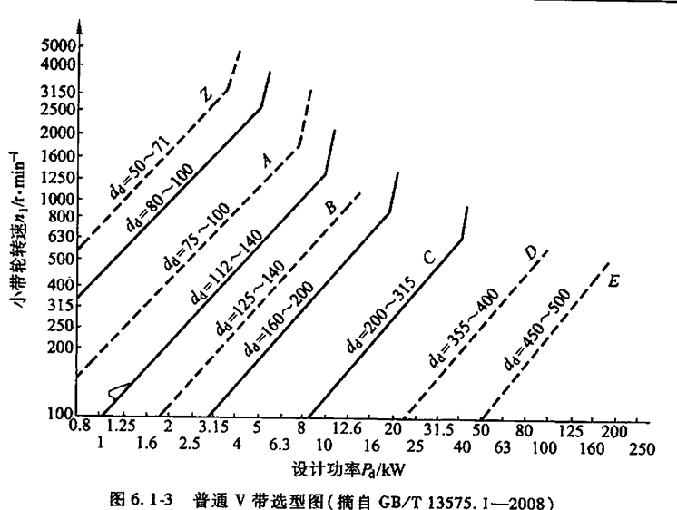

V带设计
1.手工计算和校验过程
1.1、已知条件
- 传动功率
P=3.4kW
- 主动带轮转速
n_1=960r/min
- 传动比
i=3.5
- 原动机及启动类型：软启动-电动机
- 工作机载荷性质：载荷变动较小
- 每天工作时间：16小时
1.2、计算和设计过程
-
- [1] 确定计算功率P_d
-
公式：
P_d=K_A \cdot P
,其中：
K_A是工况系数，由下面的表6.1-13来决定，在本例里
K_A=1.2
所以，
P_d=K_A\cdot P=1.2*3.4=4.08kW
-
- [2] 选定带型
-
由
P_d, n_1根据图6-1-3、图6-1-4和图6-1-5来选取。

由
P_d=4.08kW, n_1=960r/min,优先选普通系列，可从图6-1-3选得类型为A，小带轮的基准直径范围：
d_{p1}=112\le d_d \le d_{p2}=140
-
- [3] 确定传动比i或大带轮(从动轮)转速n_2
-
由
i=\dfrac{n_1}{n_2}=\dfrac{d_{p2}}{d_{p1}}，若计入滑动率
\varepsilon，有：
i=\dfrac{n_1}{n_2}=\dfrac{d_{p2}}{(1-\varepsilon)d_{p1}}，其中
-
\varepsilon
是滑动率， 通常 ，
\varepsilon=0.01\sim 0.02，这里取
\varepsilon=0.015
-
n_2是大带轮的转速（r/min）
-
d_{p1}是小带轮节圆直径（mm）
-
d_{p2}是大带轮节圆直径（mm）
节圆直径可视为基准直径。
在本例中，
i,n_1已知，于是可得
n_2=\dfrac{n_1}{i}=\dfrac{960}{3.5}=274.3 r/min
-
- [4] 确定小带轮的基准直径d_{d1}
-
在前面确定带型的时候，已经得到了小带轮的基准直径的范围，可以由此从表6.1-19或表6.1-20来选择一个合适的基准直径，为了提高V带轮的寿命，从最大的开始选起，由于小带轮的基准直径范围：
d_{p1}=112\le d_d \le d_{p2}=140，类型是A型，查表6.1-19可初选
d_{d1}=140mm
-
- [5] 确定大带轮的基准直径d_{d2}及修正后的传动比i'并检验其是否误差符合要求
-
由公式
d_{d2}=i*d_{d1}*(1-\varepsilon)，由于
\varepsilon=0.015，
d_{d2}=i*d_{d1}*(1-0.015)=3.5*140*(1-0.015)=482.65mm，然后由表6.1-19来确定合适的基准直径，要求修正的传动比
i'=\dfrac{d_2}{(1-\varepsilon)*d1}和原来的传动比
i的相对误差
\Delta i=\dfrac{i'-i}{i}\le 5\%：把查出来的值
d_{d2}=500mm代入，求出
i'=\dfrac{d_2}{(1-\varepsilon)*d1}=\dfrac{500}{(1-0.015)*140}=3.626, \Delta i=\dfrac{i'-i}{i}=\dfrac{3.626-3.5}{3.5}=0.036=3.6\% \lt 5\%，所以
d_{d2}=500mm是合适的。
-
- [6] 确定带速v并检验其是否符合要求
-
由公式
v=\dfrac{\pi*d_{d1}*n_1}{60*1000}\le v_{max}，
 由
由